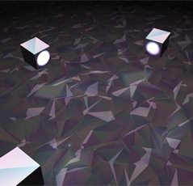

Virtual Sound Gallery is a web stage for modern multichannel music, sound, and audiovisual art. It is an accessible, web-based virtual reality (VR) environment for a visualized binaural simulation of multichannel sound reproduction.
The performance involves audience participation with their mobile devices. Connected to a wireless network and organized into one polyphonic multichannel synthesizer, those devices reproduce different noises, samples, and synthesized sounds from random locations in the hall.
Music for virtual objects, octaphonic sound system, and contactless interface (Leap Motion). There are no samples or live instruments in this work, every sound is generated using physical modelling synthesis.
Conundrum for table and electronics, a computer game for one percussionist on stage. This interactive peice is dedicated to Mark Pekarskiy, who is the first musician performed it. The premier took place at the Moscow Composser's Union hall during the Moscow Autumn music festival in November 2016.
Music of things is a serie of live electronic music works based on a specicific granular synthesizer, which I have developed using Max/Msp. Main feature of this instrument is a capability to freeze any time period of a sample or real-time recording. I can explore and play with timbral and amplitude charecteristics of this freezed sound object.
Music for dance movie Aquarius is my last cinematic work.
Andrey Bundin. Computer Music: the art of randomness and regularity // electronic journal «Hitch.Space». Language: Russian. URL: https://hitch.space/kompyuternaya-muzyika
Andrey Bundin. Virtual Sound Gallery // Proceedings of the 2nd Web Audio Conference (WAC-2016), Atlanta, 2016. ISBN: 978-0-692-61973-5
Andrey Bundin. Virtual Sound Gallery: a web stage for modern multichannel music and audiovisual art // Proceedings of the 2nd Web Audio Conference (WAC-2016), Atlanta, 2016. ISBN: 978-0-692-61973-5
Andrey Bundin. Concert for Smartphones // Proceedings of the 2nd Web Audio Conference (WAC-2016), Atlanta, 2016. ISBN: 978-0-692-61973-5
Bundin, Andrey S. Methods of Sound Material Development in Electroacoustic Composition // The Scientific Opinion — 2013 (9): 80-84p. St. Petersburg University Consortium press. Language: Russian. ISSN: 2222-4378.
Bundin, Andrey S. Theory of Electroacoustic Music at the Turn of XX–XXI Centuries: Research Directions // IZVESTIA: Herzen University Journal of Humanities and Sciences — 2013 (162):121-126. Herzen University press. Language: Russian. ISSN: 1992-6464.
Bundin, Andrey S. Spatial development of musical material in electroacoustic composition // Music education in the modern world: the dialog of times: a collection of articles based on materials of the conference (10–12 December 2009). P. 1. — Russia, St. Petersburg.: Herzen University press, 2010. — P. 296–299.
Bundin, Andrey S. An experience of structural analysis of electroacoustic music composition by F. Bayle «Espaces Inhabitables» // Music education in the modern world: the dialog of times: a collection of articles based on materials of the conference (22–23 December 2010). P. 2. — Russia, St. Petersburg.: Herzen University press, 2010. — P. 22–26. Language: Russian.
Bundin, Andrey S. To the problem of classification of electronic musical instruments // Musical culture through the eyes of young scientists: a collection of scientific papers. Vol. 6. — Russia, St. Petersburg.: Asterion, 2011. — P. 109–112.
Bundin, Andrey S. Sound object as a constructive element in electroacoustic music composition // Music education in the modern world: the dialog of times: a collection of articles based on materials of the conference (2–3 December 2011). P. 2. — Russia, St. Petersburg.: Herzen University press, 2012. — P. 16–22. Language: Russian.
Bundin, Andrey S. Electroacoustic music: to the problem of definition // Musical culture through the eyes of young scientists: a collection of scientific papers. Vol. 7. — Russia, St. Petersburg.: Asterion, 2012. — С. 128–132.
Bundin, Andrey S. Acoustic bases of sound synthesis // Musical culture through the eyes of young scientists: a collection of scientific papers. Vol. 8. — Russia, St. Petersburg.: Asterion, 2013. — P. 133–137. Language: Russian.